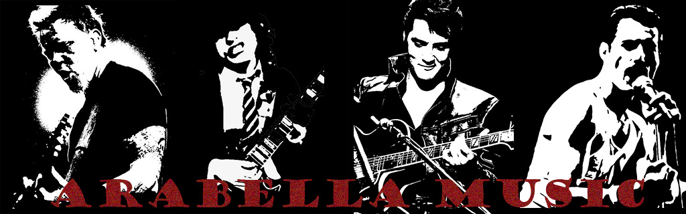
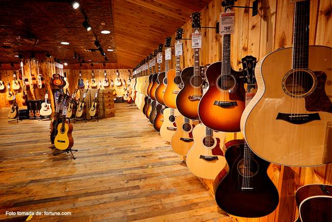
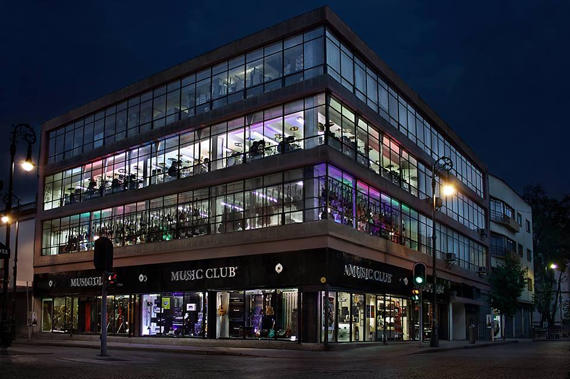
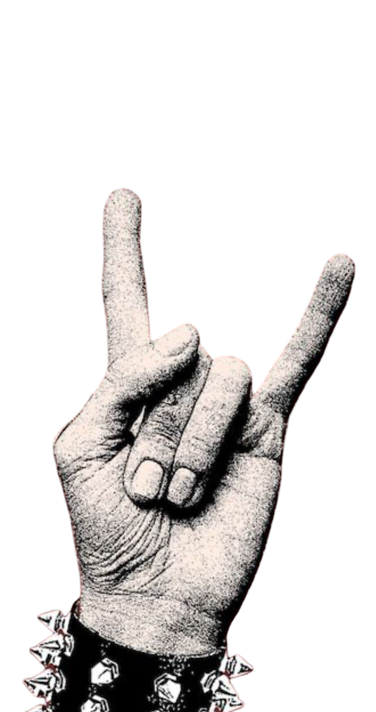

 Somos un negocios de ventas, compras y reparaciones de instrumentos musicales.
Somos un negocios de ventas, compras y reparaciones de instrumentos musicales.
Se venden y promocionan instrumentos musicales y sus variaciones como lo son herramientas,
accesorios y piezas para su mayor optimizacion y mantenimiento de forma voluntaria, se
ofrecen tambien servicios de mantenimiento de instrumentos en el local.
Arabella Music es una
tienda dedicada a la venta y distribución de instrumentos musicales, accesorios y productos
relacionados con la música. Su objetivo principal es apoyar a músicos principiantes y profesionales
ofreciendo una variedad de instrumentos como guitarras, teclados, baterías y equipos de sonido,
así como cuerdas, baquetas, amplificadores y otros complementos musicales.
Además de la venta de productos, este tipo de tienda suele brindar servicios como asesoría para elegir
instrumentos, mantenimiento o reparación de equipos y, en algunos casos, clases de música o
promoción de actividades musicales. Arabella Music busca fomentar el desarrollo artístico y musical
de su comunidad, convirtiéndose en un punto de encuentro para amantes de la música y músicos locales.
CONOCENOS MAS

¿COMO LO LOGRAMOS?
Recibimos por contacto internacional variaciones de instrumentos, desde los mas basicos como las guitarras
y pianos, hasta los mas complejos como baterias completas y contrabajos. nos ideamos en instrumentos de
distintos materiales

PRECIOS Y DECISIONES
Arabella Music se caracteriza por ofrecer precios accesibles en instrumentos musicales y accesorios, permitiendo
que más personas puedan iniciarse en la música sin gastar demasiado. La tienda busca mantener un equilibrio entre
calidad y costo, ofreciendo productos a precios competitivos para estudiantes, aficionados y músicos. De esta
manera, facilita el acceso a guitarras, teclados, baterías y otros equipos musicales a un público amplio.

¿DONDE ENCONTRARNOS?
Arabella Music se encuentra ubicada en un lugar accesible dentro de la ciudad, lo que facilita que los clientes
puedan visitarla con facilidad. Su ubicación permite que estudiantes, músicos y personas interesadas en la
música lleguen rápidamente para adquirir instrumentos, accesorios o recibir asesoría musical. Gracias a su buena
localización, la tienda se convierte en un punto cercano y conveniente para la comunidad musical.

